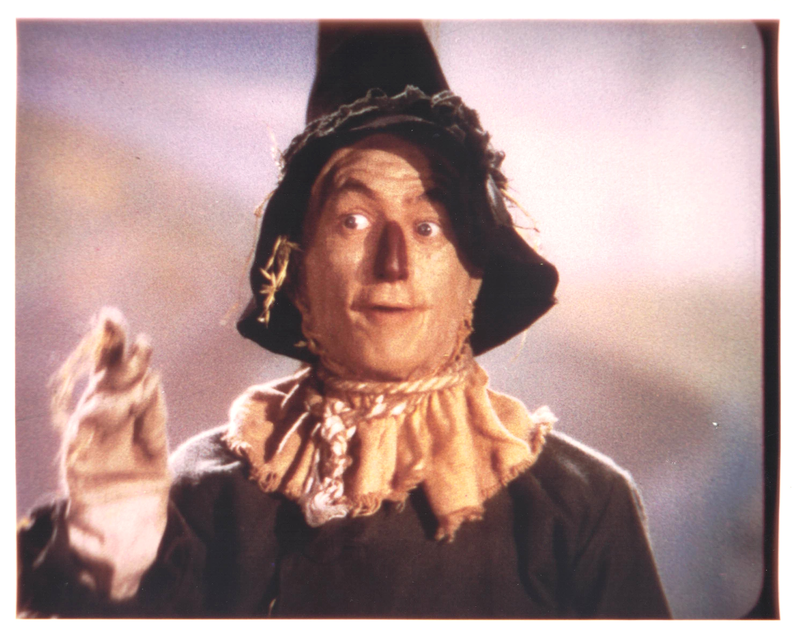

Product No. HEC-0028
$14.99
Shipping: $8.95
Description
8x10 Color photo as the Scarecrow
Full Description
Ray Bolger (Deceased) was an American actor, dancer, singer, and vaudeville performer best remembered for playing the Scarecrow in the 1939 MGM classic "The Wizard of Oz." Born January 10, 1904, in Boston, Massachusetts, Bolger became known for his distinctive loose-limbed dancing style, comic timing, and energetic stage presence. Before achieving movie fame, Bolger established himself as a successful Broadway performer. His stage credits included "On Your Toes," "By Jupiter," and "Where's Charley?" He won a Tony Award for his starring performance in "Where's Charley?" and later appeared in the film version. Bolger's other notable movies included "The Great Ziegfeld," "The Harvey Girls," "April in Paris," and Disney's "Babes in Toyland." He also starred in the television series "Where's Raymond?," later renamed "The Ray Bolger Show," and made numerous television guest appearances throughout his long career. Bolger died on January 15, 1987, at age 83. His portrayal of the Scarecrow remains one of the most recognizable characters in classic Hollywood cinema. Ray Bolger autographs, signed photographs, "The Wizard of Oz" memorabilia, and vintage movie collectibles remain popular with collectors.
Condition
Excellent condition